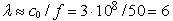
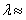
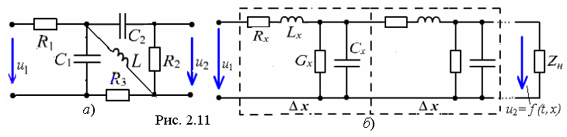
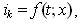

Электрическая цепь с сосредоточенными
параметрами – цепь, в которой сопротивления, индуктивности
и электрические ёмкости считают сосредоточенными на отдельных участках
этой цепи. Цепь представляет собой совокупность самостоятельно
существующих элементов (рис. 2.11, а). В такой цепи длина
волны электромагнитных колебаний входных воздействий значительно
больше размеров элементов и всей цепи. Так, при частоте сигнала
f = 50 Гц длина волны  км,
а при частоте f = 1 МГц, 300 м. Для описания такой цепи используют математический
аппарат теории цепей.
 В цепях с распределёнными параметрами (рис. 2.11, б) электрические сопротивления, проводимости, индуктивности и электрические ёмкости распределены вдоль этой цепи, а длина волны электромагнитных колебаний входных воздействий соизмерима с размерами исследуемого устройства или его элементов; при этом ток в пределах ветви и её элементов изменяется от одного сечения к другому, т. е.  где х - длина ветви (элемента ). Так, при частоте f = 30 ГГц длина волны λ ≈ c/f = 3·108/30·109 = 0,01 м = 1 см. При значительном увеличении частоты сигнала практически любая цепь становится «длинной» по отношении к длине волны. При описании такой цепи используют математический аппарат теории электромагнитного поля. |